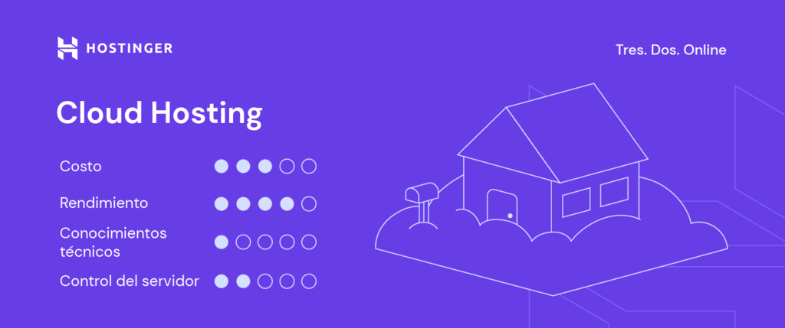
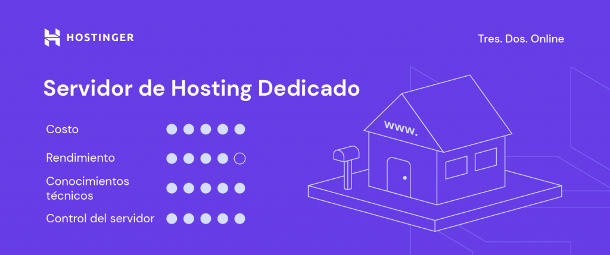

¿Qué tipos de hosting existen?
Con las numerosas opciones de alojamiento web disponibles, puede resultar difícil determinar cuál es la mejor para tu página web.
La mayoría de los proveedores de hosting ofrecen diferentes tipos de hosting web, tanto alojamiento web gratis como de pago, para poder satisfacer las necesidades de diferentes clientes, ya sea que desees ser dueño de un gran negocio en línea o crear un blog personal simple.
Lo ideal es empezar con el plan de hosting más sencillo. Una vez que tu sitio tenga más tráfico, puedes cambiar a un plan más avanzado. Puedes consultar los precios de Hostinger para tener una ideal general de los diferentes planes de alojamiento que ofrecemos y sus costos.
Hosting Compartido

Con el hosting compartido, varios usuarios comparten los mismos recursos del servidor, incluida la memoria, la capacidad de procesamiento y el espacio de almacenamiento.
Gracias a su sencillez y bajo costo, el alojamiento web compartido es una solución excelente para pequeñas empresas y sitios web personales que no requieren una configuración avanzada o un gran ancho de banda.
Por lo tanto, el alojamiento compartido es un tipo de hosting excelente para principiantes que necesitan un hosting más barato para empezar.
Ventajas:
- Rentable, perfecto para páginas web de negocios pequeños
- No se necesitan conocimientos técnicos específicos
- Opciones de servidor pre-configuradas
- El mantenimiento y la administración del servidor son realizados por el proveedor.
Desventajas:
- Poco o ningún control sobre la configuración del servidor
- Los aumentos del tráfico en otros sitios web pueden ralentizar tu sitio
Hosting VPS

Con este tipo de hosting web, tu página web también comparte un servidor físico con otros usuarios, pero el proveedor de hosting web crea una partición virtual para cada usuario. Así, un sitio alojado en un hosting VPS (Servidor Privado Virtual) obtiene una cantidad asignada de recursos del ordenador.
El hosting VPS es un gran tipo de hosting para sitios de tamaño medio, tiendas de comercio electrónico y grandes blogs con un número de visitantes en rápido crecimiento.
Ventajas:
- Espacio de servidor dedicado
- Los aumentos de tráfico en otras páginas web no afectan para nada tu rendimiento
- Fácilmente escalable y altamente personalizable
Desventajas:
- Conocimientos técnicos para gestionarlo
- Aunque es relativamente asequible, algunos usuarios pueden tener que contratar a un desarrollador para gestionar el servidor virtual, lo que aumenta los costes totales.
Cloud hosting
Los servidores cloud son actualmente la solución más confiable del mercado. Este servicio de hosting utiliza varios servidores virtuales para alojar sitios. Así, si un servidor web experimenta un tráfico elevado o un problema, otro servidor web tomará el relevo y mantendrá la página web funcionando.
Contratar un hosting en la nube se basa en un clúster de servidores web para funcionar, las empresas con múltiples sitios web y los sitios a gran escala como las tiendas de comercio electrónico, pueden sacarle el máximo provecho, ya que proporciona poco o ningún tiempo de inactividad.
Ventajas:
- Poca probabilidad de tiempos de inactividad y fallos de hardware
- Utiliza el equilibrio de carga para gestionar el tráfico elevado y evitar ataques DDoS
- Es escalable. Es decir, tu sitio web no está limitado a los recursos de un único servidor.
Desventajas:
- No siempre se proporciona acceso a la raíz
- El precio es más elevado que una solución compartida o VPS
Servidor dedicado
El hosting con servidor dedicado designa un servidor físico para cada página web. Al optar por el hosting con servidor dedicado, puedes configurar el servidor, elegir el sistema operativo y el software que desees y personalizar todo el entorno de hosting según tus especificaciones.
Alquilar un servidor dedicado es tan potente como tener tu propio servidor on-site, pero con la ventaja añadida de obtener asistencia profesional de tu proveedor de alojamiento Web.
Por lo tanto, el hosting con servidor dedicado es ideal para grandes empresas en línea que tienen tráfico pesado en sus sitios web.
Ventajas:
- Control total sobre la configuración del servidor
- Alta confiabilidad y opciones de seguridad
- Acceso a la raíz del servidor
Desventajas:
- Alto costo, más orientado a empresas más grandes
- Se requieren conocimientos técnicos y de administración de servidores